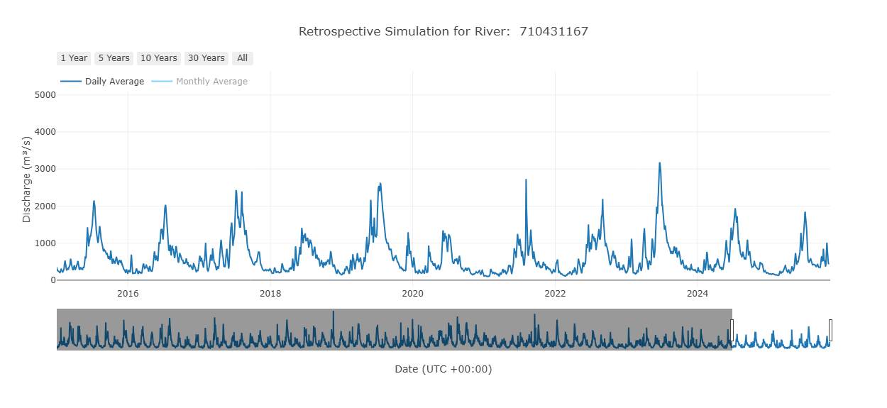

Terms and Vocabulary
- ERA5: The fifth generation of ECMWF atmospheric reanalysis of the global climate. It is the most recent reanalysis dataset produced by the European Centre for Medium-Range Weather Forecasts (ECMWF). It is available from 1940 to present and is updated daily with a 5-day lag.
- Reanalysis: A modeled product which incorporates in situ and/or remote sensing data to provide the best possible estimate of historical hydrometeorology conditions. Reanalysis data are used as inputs to the RFS model.
Overview
The retrospective simulation from RFS is an 85+ year deterministic model simulation at hourly resolution beginning 1 January 1940. The retrospective simulation and many derivative products are updated weekly. It is based on the ERA5 dataset. New ERA5 are produced each day with 5 days of lag from real time so the least amount of lag possible is 5 days. Once a week, all new ERA5 data since the last simulation are used to extend the retrospective simulation bringing the lag back down to 5 days.

The dataset is deterministic and based on reanalysis land surface modeling which means that there is only 1 value per timestep unlike the forecasts. The retrospective simulation provides hourly average flows which are resampled to daily, monthly, and yearly averages. Flows are reported as the average that occurred over the following interval (hour, day, month, or year). Dates are reported at the start of an interval in UTC +00:00 time zone (e.g. "left aligned" dates). The value given represents the average flow starting at that time until the next timestep. All values are in cubic meters per second.
The monthly average data is available in two different formats. One is optimized to read the entire time series for a single river or group of rivers, which is anticipated to be the most common use case. Another is optimized to read a large chunk of rivers at a given timestep.
| Model Property | Retrospective Simulation |
|---|---|
| Earliest Date | 01 January 1940 |
| Simulation Type | Deterministic |
| Ensemble Members | 1 |
| Lag time | 5-12 Days from present |
| Time Step | Hourly average |
| Update Frequency | Weekly on Sunday 00:00 UTC |
| Bulk Download Available | Yes |
| Query & Subset Available | Yes |
Derivative Products
Return Periods
A return period is an estimate of how infrequently an extreme high flow (flood) or prolonged low flow period (drought) occurs. Return periods have been precalculated using the Gumbel Distribution and Log Pearson Type 3 distributions and the hourly average maximum flows from each complete year. The precalculated return periods are used to define warning levels for each river segment in the model. The precalculated values are for 2, 5, 10, 25, 50 and 100 year recurrence intervals. You can calculate a return period using your preferred method by accessing the same annual maximums dataset.
Flow Duration Curves
Flow Duration Curves (FDCs) are a representation of flow patterns in a river. They relate each discharge to a probability of exceedance. The exceedance probability is the chance that any randomly sampled discharge values is greater than or equal to the flow for that probability. Large floods have a low chance of exceedance while low flows have a high chance of exceedance. The FDC is a useful tool for understanding the variability of streamflow and the likelihood of different flow rates. FDCs are precalculated for each month (e.g. 12 total curves that represent each month) and for the entire period of record of the river. These help understand streamflow throughout the year and seasonal changes in flow which is applicable to effective water resource management, flood forecasting, and understanding hydrological patterns.